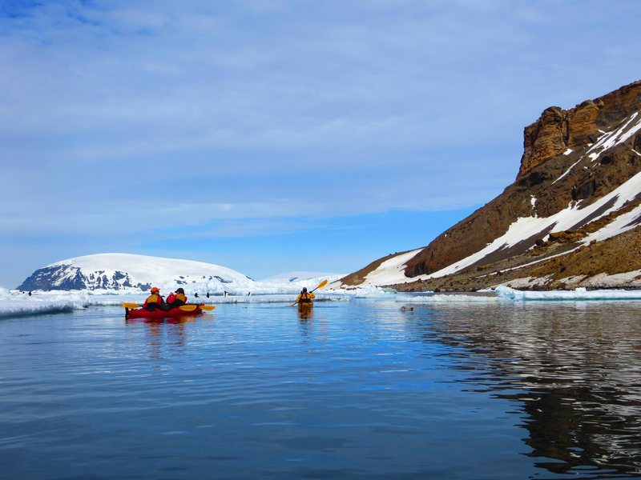

I go where things are being built.

I started in the big machine. IBM, Credit Suisse, where I was rated AAA (Exceptional), and Lloyds Banking Group, where I helped create TSB Bank with 5 million customers on day one. Then the agency side, running the UK's biggest rebrand at 23. It was great training in discipline. But I was a cog, and I wanted to feel the impact of my work.
So I jumped. As Entrepreneur in Residence at Oxygen Accelerator, I helped 14 start-ups grow from the ground up, and fell in love with building. I went to San Francisco looking for the next big idea, came back to London with a plan for a food delivery start-up, and then joined Pronto instead: they were a few steps ahead and full of brilliant people. I built their B2B business from nothing.
Then I learned the hard way. I founded my own company, Courage Global, with a co-founder. We spent months perfecting the website, the brand and the concept, and far too little time in front of customers. It didn't work. The lesson stuck: whether it's a start-up, a new product or a new country, the idea comes from you, but the market tells you if it works. Get in front of buyers early, listen hard, and build around what they actually buy.
Since then, I've built engines. Wheely through Covid. Arbonics across four markets. UXCam for the age of AI. The common thread is taking something new to market and building the engine that keeps it growing: the right customer, the right price, the right pitch, and a process a team can run without me.
Who I work best with
Fast-growing tech companies that make people's lives better: fintech that helps people invest and own more, AI that makes skilled work faster, health, climate and mobility. Well funded, moving fast and serious about using AI properly. I work across the UK, Europe and the US.
Beyond work
I'm a proud dad of a one-year-old, and we're building our life in Berlin. Before that came eight marathons, the world's first ice obstacle course in the Arctic Circle, kayaking in Antarctica, mountains wherever I could find them, and six years as a Lance Corporal in intelligence in the British Army Reserve. I like hard things, and I bring the same discipline to every launch.


The details.
Portfolio support, talks and podcasts.
For your companies
I've built sales inside companies backed by Headline, Plural, Concentric, Seedcamp and Playfair. I run office hours and workshops for portfolio companies on getting their commercial formula right before they scale it.
Portfolio workshopsFor your stage
Talks, panels and podcasts on commercial strategy in the age of agents: what to automate, what not to, and why most AI sales projects scale the wrong thing.
Topics and formats